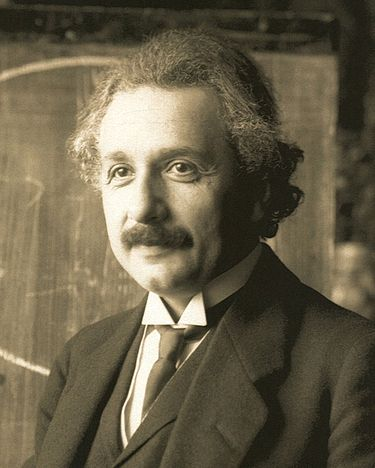
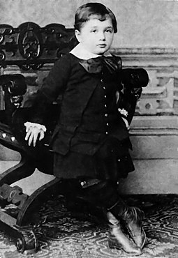

Альберт Ейнштeйн

Альберт Ейнштeйн (також Айнштайн[1][2][3], нім. Albert Einstein [ˈalbɐrt ˈaɪnʃtaɪn], англ. ['ælbət ˈʌɪnstʌɪn][4], 1879, Ульм, Німеччина — 1955, Принстон, США) — один з найвизначніших фізиків XX століття. Лауреат Нобелівської премії 1921 року. Дійсний член Наукового товариства імені Шевченка[5].
Народився 14 березня 1879 року в німецькому місті Ульм в єврейській родині. Мешкав у Швейцарії (з 1893), Німеччині (з 1914) і США (з 1933). Створив спеціальну (1905) і загальну (1907–1916) теорії відносності; відкрив закон взаємозв'язку маси і енергії (див. E=mc²). Автор основоположних праць з квантової теорії: ввів поняття фотона, встановив закони фотоефекту, основний закон фотохімії (закон Ейнштейна), передбачив (1916) вимушене випромінювання. Розвинув статистичну теорію броунівського руху, заклавши основи теорії флуктуацій, створив квантову статистику Бозе—Ейнштейна. З 1933 року р. працював над проблемами космології і єдиної теорії поля.
У 1930-ті роки емігрував з Німеччини до США і пізніше на знак протесту проти націонал-соціалізму відмовився від німецького громадянства і вийшов із складу Прусської і Баварської академій наук. Також виступав проти війни, в 1940-х — проти застосування ядерної зброї. У 1940 підписав лист президентові США про небезпеку створення ядерної зброї в Німеччині. Гаряче підтримував ідею створення єврейської держави.
Приватний архів Альберта Ейнштейна зберігається в Національній бібліотеці Ізраїлю в місті Єрусалим.
Альберт[6] Ейнштейн народився 14 березня 1879 року в німецькому місті Ульмі в незаможній єврейській сім'ї Германа і Пауліни Ейнштейн. Герман Ейнштейн (1847—1902), маючи непересічні математичні здібності, володів невеликим підприємством, але постійно стояв на межі банкрутства. Мати, Пауліна (уродж. Кох, 1858—1920) походила з сім'ї забезпеченого торговця кукурудзою Юліуса Дерцбахера (у 1842 році змінив прізвище на Кох) і Йетти Бернгаймер[7]. У Ейнштейна була молодша сестра Марія (Майя, 1881—1951). Будинок, в якому народився вчений, був зруйнований під час бомбардувань 1944 року і не був відновлений. Збереглася міська реєстраційна книга, в якій записано: «До чиновника міського реєстраційного бюро, що підписався нижче, сьогодні з'явився знайомий йому в обличчя комерсант Герман Ейнштейн, юдейського віросповідання, що проживає в Ульмі на Бронгофштрассе, 135».
Альберт Ейнштейн у віці 14 років
Будучи дитиною нерелігійних батьків, Альберт Ейнштейн відвідував католицьку початкову школу в Мюнхені і до 12 років був досить глибоко віруючим підлітком, хоч і не розмежовував християнське й юдейське віровчення[8]. Однак, читання науково-популярних книг незабаром зробило його вільнодумцем і назавжди породило в ньому недовіру до авторитетів[9]. Хлопчик зростав замкнутим і нетовариським і не демонстрував яких-небудь значних успіхів в школі. Поширеною є думка, що в дитинстві Альберт Ейнштейн був не здібний до навчання. Як докази наводяться низькі показники, які він демонстрував у школі, а також той факт, що майбутній геній вельми пізно почав ходити і говорити. Проте така точка зору заперечується багатьма дослідниками біографії Альберта Ейнштейна. Дійсно, вчителі критикували Ейнштейна за повільність і погану успішність, проте пояснення низької успішності і труднощам в навчанні Ейнштейна слід шукати не в лінощі або поганих здібностях учня, а в елементарній скромності, несприйнятті застарілих педагогічних методів, що застосовувалися в німецьких школах кінця XIX — початку XX століть, можливій дислексії або специфічній структурі мозку Ейнштейна.
Коли Альберту було 5 років, його батько вперше показав йому компас. Це перше враження від знайомства з технікою у Ейнштейна збереглося на все життя і, як він сам визнавав, визначило його захоплення всілякими механізмами і наукою. У 1889 знайомий студент-медик познайомив Ейнштейна з класичною філософією, зокрема, з «Критикою чистого розуму» Іммануїла Канта. Твори Канта також у значній мірі спонукали майбутнього вченого до вивчення математики, фізики і філософії. Крім того, в дитинстві під тиском матері він з шести років почав займатися грою на скрипці. Захоплення музикою також зберігалося у Ейнштейна впродовж усього життя, і у 1908 він навіть виступав у квінтеті музикантів-аматорів (спільно з математиком, поліцейським, юристом і палітурником). Вже перебуваючи в США у Принстоні, у 1934 Альберт Ейшнтейн дав доброчинний концерт Моцарта для скрипки на користь учених і діячів культури, що емігрували з нацистської Німеччини.
 Альберт Ейнштейн був переконаним демократичним соціалістом, гуманістом, пацифістом і антифашистом. Авторитет Ейнштейна, досягнутий завдяки його революційним відкриттям у фізиці, дозволяв ученому активно впливати на суспільно-політичні перетворення в світі.
Альберт Ейнштейн був переконаним демократичним соціалістом, гуманістом, пацифістом і антифашистом. Авторитет Ейнштейна, досягнутий завдяки його революційним відкриттям у фізиці, дозволяв ученому активно впливати на суспільно-політичні перетворення в світі.
У есе під назвою «Чому соціалізм?» («Навіщо потрібний соціалізм?», «why Socialism?»), виданому як стаття в найбільшому марксистському журналі США «Щомісячний огляд»[10] (Monthly Review) в травні 1949, Альберт Ейнштейн виклав своє бачення соціалістичних перетворень. Зокрема, фізик обґрунтовував нежиттєздатність економічної анархії капіталістичних відносин, що є причиною соціальної несправедливості, а головним пороком капіталізму називав «зневагу людської особи». Засуджуючи відчуження людини при капіталізмі, прагнення до наживи і користолюбства, Ейнштейн відзначав, що демократичне суспільство само по собі не може обмежити свавілля капіталістичної олігархії, і забезпечення прав людини стає можливим лише в умовах планової економіки. Слід зазначити, що стаття була написана в розпал маккартистського «полювання на відьом» на прохання марксистського економіста Пола Суїзі.
Ейнштейн не підтримував насильницькі засоби боротьби за права народних мас, особливо відзначаючи заслуги Махатми Ганді: «Я вважаю переконання Ганді найвидатнішими зі всіх політиків-наших сучасників. Ми повинні прагнути здійснювати вчинки в цьому дусі: не використовувати насильство для боротьби за наші права». Він був одним із співзасновників ліволіберальної Німецької демократичної партії і членом пов'язаною з Американською федерацією праці Американської федерації вчителів. Також він активно сприяв боротьбі темношкірого населення США за громадянські права, будучи впродовж двох десятиліть близьким другом темношкірого співця і актора Поля Робсона. Так, Альберт Ейнштейн і Поль Робсон були співголовами «Хрестового походу за відміну лінчування» (American Crusade to End Lynching).
Альберт Ейнштейн виступав за побудову демократичного соціалізму, який з'єднав би соціальний захист населення і планування економіки з демократичним режимом і правами людини. Він не схвалював тоталітарні методи побудови соціалістичного суспільства, що спостерігалися в сталінському СРСР, проте завжди залишався другом Радянського Союзу і противником конфронтації західних демократій і соціалістичного табору. Одночасно він відкидав націоналізм в будь-яких його проявах і називав його «кором людства»